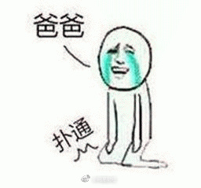

今晚北京有63万儿子和闺女突然变得孝顺了。
@网易财经:
#网易财经# 【老人花30元中了9921万！他对孩子保守了秘密｜亲爹的用心】2018年4月16日晚开奖的体彩大乐透第18043期，一位北京的退休大爷花了30元独中12注（其中6注追加）一等奖，奖金总额高达9921万元。
老人说：“怎么使用奖金还没想好，但是我们不能因为中奖打扰了平静的生活。”
他接着说，“现在我们还没跟孩子和亲戚们说中奖的事。孩子还年轻，有自己的工作，还要鼓励孩子自己去打拼，不能因此产生其他想法。我们会选择合适的时机告诉他们。”
 老人花30元中了9921万！他对孩子保守了秘密｜亲爹的用心
老人花30元中了9921万！他对孩子保守了秘密｜亲爹的用心
老人说：“怎么使用奖金还没想好，但是我们不能因为中奖打扰了平静的生活。”
他接着说，“现在我们还没跟孩子和亲戚们说中奖的事。孩子还年轻，有自己的工作，还要鼓励孩子自己去打拼，不能因此产生其他想法。我们会选择合适的时机告诉他们。”
- 